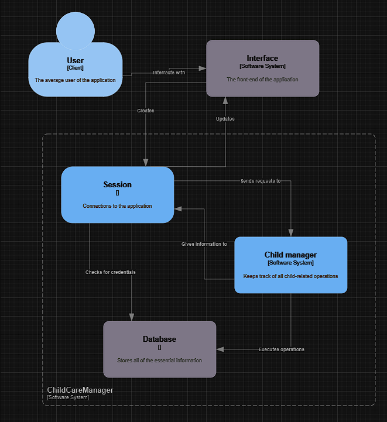
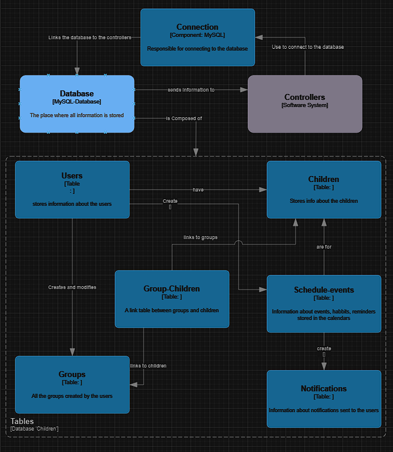
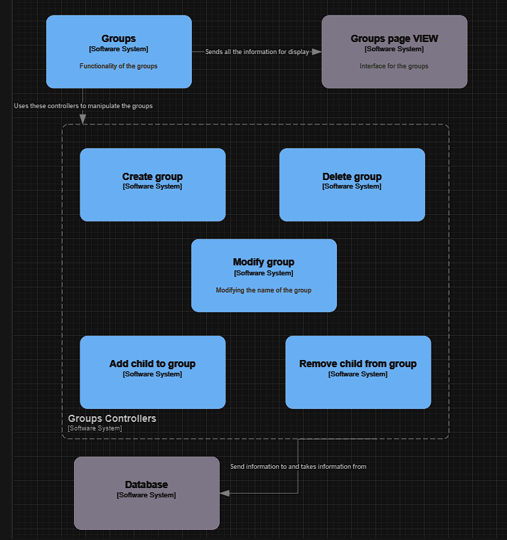

1. Introduction
This documentation provides a detailed overview of the "Child Manager", a web-based application designed to help parents and guardians manage and track the development and daily activities of their children. This document aims to assist developers, project reviewers, and users in understanding the functionalities and architecture of the application.
1.1 Purpose
The "Child Manager" application provides a centralized platform for managing children's health, education, and daily activities. It allows users to register profiles for their children, track developmental milestones, manage educational and medical records, and integrate multimedia resources.
1.2 Intended Audience
This document is intended for software developers involved in maintaining and enhancing the application, educational and health professionals seeking to understand the application's capabilities, and end-users looking for instructions on how to navigate and use the features of the application.
1.3 Product Scope
The product serves as a digital assistant for parents managing the complexities associated with child upbringing, from infancy through to adolescence. It incorporates a range of tools including a calendar for tracking sleep and feeding, a multimedia gallery for memories, medical and developmental records, and the possibility to track a child's relationships.

2. System Architecture and Overview

2.1 Functionalities of the Product
The product allows users to register and login on the website, then register children that are in
their care. Once a child has been registered, the user has access to a multitude of functionalities.
They can save photos and videos related to the child on the website and can also share them online to friends
and familly. Also, there is a "timeline" function, that a user can personally build by selecting the
precise photos, videos and moments that are worthy or remembering, and the product will create
a timeline of these photos in chronological order. The user will receive notifications to remind him of
any habbits of the child, such as the times when it has to sleep or take specific medication.
In case that anything happens to the product, the user can export their data using the "Export" function
and have it saved in a JSON format. They can later import that same data once the website is back up and running again.
2.2 Page Descriptions
- Welcome Page: The entry point of the application, providing login and registration options.
- Login Page: For user authentication, redirecting to the profile management page upon successful login.
- Registration Page: Allows new users to create an account by entering personal details and setting up login credentials.
- Profile Page: Displays user profile details and provides options to edit them, manage additional profiles for children, and import or export data (via buttons ).
- Child Registration Page: Enables the user to register profiles for their children, including details like name, date of birth, and developmental stage.
- Manage Children Page: Allows users to view and manage all registered child profiles and perform actions like edit or delete.
- Notifications Page: Lists recent notifications related to the user's children, such as reminders for meal time and bedtime.
- Media Page: A gallery view where users can upload, view and manage photos, videos and audio recordings of their children.
- Timeline:rovides a chronological view of significant events and milestones in the child’s life, that facilitates easy tracking and memory keeping.
- Calendar pages: Multiple pages that help keep track of certain habbits and moments related to sleep, eating, medication and overall health and developement.
- Group pages: Responsible for keeping track of all the groups that the children are a part of, either the siblings of the child or it's friends and classmates and so on.
2.3 User Classes and Characteristics
The application is designed to accommodate various user classes including:
- Parents & Legal Guardians: Primary users who will manage their own and their children's profiles.
- Healthcare Professionals: May use the application to track and advise on children's health records (with parental consent).
- Educational Professionals: With consent, can access children's educational records and milestones.
2.4 Design and Implementation Constraints
The application is restricted by certain design constraints including the need for high data security, user-friendly interfaces for non-technical users, and compliance with data protection regulations.
2.5 Database
The database is designed to store user account information, child profiles, multimedia content, notifications, and calendar events.
It is structured to ensure data integrity and efficient retrieval for application functionalities.
The tables in the database are as follows:
- Users: used to store information about registered clients.
- Children: for storing information about the users children such as age, level of developement and so on.
- Pictures: for every image and video uploaded on the site.
- Notifications: used for the notifications page.
- Schedule-events: for storing every event, habbit or reminder that the user decides that is important to keep track off. Also used for sending notifications.
- Groups and Group-children: two table to keep track of every group the user has created and the children that make it whole.

3. Detailed Page Functionalities
3.1 Welcome Page
The Welcome Page serves as the landing page providing users with the option to either log in or register. This page is designed to be simple and intuitive to ensure that users can easily navigate to their desired actions without confusion.
3.2 Login and Registration Pages
These pages facilitate user authentication and account creation. The login page collects email and password, while the registration page requires comprehensive details for account setup. Both pages feature form validation to ensure data integrity.
3.3 Profile and Child Management Pages
The profile page allows users to view and edit their personal information.
The child management page provides functionalities to add, edit, or delete child profiles, accommodating the dynamic nature of user needs.
The user also has the option to import and export their data in JSON format.
They have calendar pages at their disposal to set up events and habbits for their children, such as feeding, sleep, medical and evolution.
3.4 Notifications and Media Pages
The notifications page alerts users about important updates and reminders.
The events set up in the calendar pages generate notifications at regular intervals, depending on the reccurency of the event, either daily, weekly, monthly or yearly.
The navigation bar on the left of the page displays the number of unread notifications, which get the status of 'read' once the specific page is accessed.
The media page offers a gallery setup where users can upload, view, and manage photos and videos related to their children.
3.5 Group pages
The group pages are used to keep track of the groups that the children are a part of.
This can be used to keep track of the siblings of the child, the friends and classmates and so on.
5. System Characteristics
5.1 Account administration
5.1.1 Overall description
A user can register an account using his email, setting up his full name, the relationship
to the children, be that Parent, Grandparent or Legal Guardian, it's birthday and a password.
Once registered, the user can log into it's account using only the email and the password.
Once a user logs onto their account, a cookie is set up that will keep the information regarding the users credentials for a month in the browsers cache.
If that cookie is set up, then the user will be automatically logged in when accessing the website.
5.1.2 The modification of information
Once an account has been created, it is stored in the database and the user can easilly modify the information regarding
their account in the profile page. Any time this happens, the credentials are stored in the database.
5.1.3 Criteria of functionality
The user needs an account in order to access all of the aplications functionalities. It also
needs a valid email address in order to register an account.
5.1.4 Logout and delete
The user can logout of it's account at any time. The action will redirect it
to the login page. This will delete the cookie created previously.
The user can also delete it's account at the press of a button in the profile page.
5.1.5 Admin functionalities
The application doesn't have a specific "admin profile". The only true admins that can
modify the database and the application at will are us, the authors. Rather,
users are the admins of their own accounts, being able to add and delete elements from the database
that are directly related to them (e.g. their children, their photos). Also, the users can import and export their own data
from the application in JSON format.
5.2 Administration of the children profiles
5.2.1 Overall description
The user can add children on his profile using the manage children button on it's
profile page. There, children can be added, deleted and modified. Their characteristics include their
name, age and their learning stage. This can be used to monitor the developement of the child.
5.2.2 Photos and videos
In the multimedia page, the user can add, delete and view pictures of their children,
each picture being linked to exactly one child. Also, here, the media can be selected by the user
as "thei favorite", using the "star" icon on each photo. Once the icon is selected, the media content is marked
for ussage in the timeline page.
5.2.3 Timeline
The user can view their favorite memories of their children, as selcted by them,
in chronological order.
5.2.4 Calendars
The user has 4 calendars at their disposal for each child. On these calendars, the
user can set up events and habbits for their children. The calendars are "Feeding", "Sleep", "Medical" and "Evolution".
For each set up event, the user can select their reccurency. This is needed for the notifications that, which
will send out a notification each time a notification completes it's reccurency period.
5.2.5 Groups
The user can create groups for their children, such as the siblings of the child, the friends and classmates and so on.
They can add, delete and modify the name of each group and can also add children to said groups. Not only their
own children, but also any child that is registered on the application. All they need is the ID of the child, which can be easily found by the caretaker.

5.3 Notifications
The application sends out notifications for each user regarding their children.
These are related to the calendar events. The user will know how many unread notifications it has
by looking at the navbar on the left (or on the bottom, when on mobile), well there is a counter next to the envelope icon,
representative of the notifications.
5.4 Documentation
This page is available to both users and developers for reading in order to better understand
the functionalities of the application.